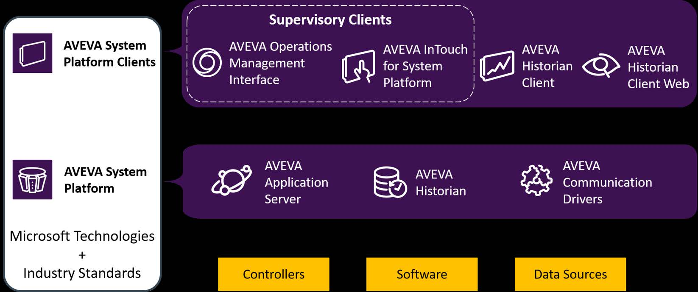

Source: AVEVA™ Operations Management Interface 2023 — Module 1: Introduction
Pages 7–16
The AVEVA™ Operations Management Interface 2023 course is a five-day, instructor-led class that provides a comprehensive overview of the features and functionalities released with AVEVA Operations Management Interface software. It covers the components and capabilities of the software, as well as topics to help you build and deploy an AVEVA Operations Management Interface visualization application for System Platform. The course also introduces tools for creating graphics, visualizing alarms and events, visualizing trends and history, and implementing security in an OMI application. Hands-on labs are provided throughout to reinforce the knowledge necessary to use the software effectively.
Upon completion of this course, you will be able to:
This course is designed for individuals who need to configure or modify AVEVA Operations Management Interface applications. Prior knowledge of industrial automation software concepts is expected, along with familiarity with key AVEVA Application Server components.
Knowledge of the following tools, features, and technologies is required before taking this course:
| Prerequisite Category | Details |
|---|---|
| General | Industrial automation software concepts |
| Application Server | System Platform IDE, Automation objects |
| Application Server | Alarms of attributes, Historization of attributes |
| Application Server | Security, Deployment model, Plant model |
| Application Server | QuickScript .NET scripting language |
The course is organized into thirteen modules, each building on the previous one:
| Module | Topic | Description |
|---|---|---|
| 1 | Introduction | Course overview, System Platform overview, Visualization overview, Encrypted communication, System requirements and licensing |
| 2 | Getting Started | Screen profiles, Layouts and panes, ViewApps |
| 3 | Industrial Graphics | Introduction to industrial graphics, Graphic editor, Graphics with objects, Tools and animations, Custom properties, Galaxy styles |
| 4 | ViewApp Customizations | Linking layouts as content, Layout and pane customizations, Custom navigation |
| 5 | External Content | Introduction to external content in ViewApps |
| 6 | Widgets | Introduction to widgets and importing additional widgets |
| 7 | ViewApp Namespaces | Predefined namespaces, Custom ViewApp namespaces and attributes |
| 8 | Security | Security overview, ViewApp security, Signed writes |
| 9 | Alarms and Events | Alarming overview, Live alarm visualization, Logged alarms and events |
| 10 | Trends | Historization overview, Real-time trending, Historical trending |
| 11 | Historical Playback | Configuring and implementing historical playback |
| 12 | .NET Controls | Importing external controls as OMI Apps |
| 13 | Scripting in Graphics | Symbol scripts, Layout scripts, Graphic client functions |
AVEVA System Platform, formerly Wonderware System Platform, is an industrial software platform built on ArchestrA technology. It contains an integrated set of services and an extensible data model to manage plant control and information management systems. System Platform supports both the supervisory control layer and the manufacturing execution system layer, presenting them as a single information source.
System Platform and its clients provide the framework and tools for developing, executing, monitoring, and visualizing your applications. Services such as data acquisition, historization, and alarming are provided by System Platform components. Services such as visualization and trending are provided by System Platform clients. The software is based on industry standards and Microsoft technologies, such as Windows, .NET, SQL Server, IIS, and others.
System Platform components access and process external data from controllers, software applications, and other data sources. There are three primary components:
| Component | Role |
|---|---|
| AVEVA™ Application Server | The heart of System Platform. Provides an object-oriented framework with tools for developing and deploying applications. |
| AVEVA™ Historian | Provides process data historization and alarm and event logging for Application Server. Data is exposed through SQL Server and/or an Open Data Protocol (OData) interface. |
| AVEVA™ Communication Drivers | Provide the platform for communication with controllers and other data sources. Support open connectivity protocols such as MQTT, OPC DA, and OPC UA. Formerly called OI Servers, they also include legacy DA Servers and I/O Servers. |
System Platform clients access information from System Platform and provide the operator interface. There are two supervisory client products — both can coexist in the same System Platform solution:
AVEVA™ Operations Management Interface (OMI) provides a rapid-design visualization framework with tools and out-of-the-box navigation to display content based on the application's data model. It leverages both HMI and SCADA systems to deliver a convergence platform for OT and IT.
AVEVA™ InTouch for System Platform is based on traditional development tools to create displays and the corresponding navigation framework from scratch. It is not included with AVEVA System Platform Enterprise.
Both supervisory clients can be accessed remotely through a web browser with AVEVA™ InTouch Access Anywhere. You simply enter a URL in a web browser on a desktop computer or mobile device and log on — no separate client application is required.
Additional client tools include AVEVA™ Historian Client (a collection of tools for accessing and reporting on historized data, including a Trend application, Query application, and Excel/Word add-ins) and AVEVA™ Historian Client Web (a browser-based tool for quick data query, trending, and analysis).

Together, System Platform and its clients provide the core services needed to develop, implement, and deploy industrial automation applications:
Applications built on System Platform are extensible through scripting within the product itself or through several available toolkits. For example, an application can access a third-party web service by means of a script.
ArchestrA provides the following system services:
Most of these services are exposed, configured, and managed by Application Server.
AVEVA System Platform Enterprise builds upon the core technology of AVEVA System Platform to bring enhanced user accessibility and exclusive visualization extensions, specifically for enterprise users in assembling an AVEVA Unified Operations Center (UOC) solution. This includes the AVEVA Operations Management Interface (OMI) Web Client, allowing applications to be viewed in a standard web browser. AVEVA System Platform Enterprise is an AVEVA Flex subscription-activated product.
Application Server (the heart of the platform), Historian (data historization and alarm logging), and Communication Drivers (connectivity to controllers and data sources via MQTT, OPC DA, OPC UA).
ArchestrA is a distributed architecture for supervisory control and manufacturing information systems. It is an open, extensible, object-oriented technology based on the Microsoft .NET Framework.
OMI provides a rapid-design visualization framework with out-of-the-box navigation for OT/IT convergence, while InTouch for System Platform uses traditional development tools to create displays and navigation from scratch.
System Platform Enterprise builds on core System Platform and adds an OMI Web Client for browser-based access, additional web widgets (ScatterChart, Breadcrumb, NavigationTree, etc.), additional OMI Apps (Power BI, PI Vision, Sankey), and UOC documentation. It is an AVEVA Flex subscription-activated product.